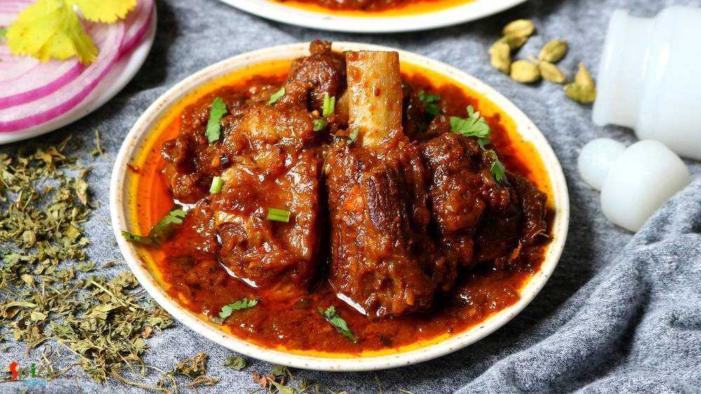

Simple and Easy Recipes
Aug 21, 2019
If you have any Bengali friend in your gang then I guess you already know that he / she has a thing for fish, football and rabindra sangeet. We eat fish in many forms like thick curry (kaliya), thin curry (jhol), batter fried, shallow fried (mach vaja), steamed version (vapa) and so on. One of the popular among them is 'fried fish'. Now in this category also we have so many variations. The most si ...


Veg Recipe
Aug 15, 2019
Dopyaza means double the amount of onion. Paneer Dopyaza is a North Indian Paneer gravy preparation which has a thick, creamy sauce along with soft Paneer cubes and slight crunch of onion. In this recipe onions will be added twice in two different forms. It goes best with naan, roti or jeera rice. Do give it a try and let me know how it turned out for you.

Nonveg Recipe
Jul 30, 2019
Fish paturi aka Macher Paturi is a traditional Bengali recipe in which any white fish fillet (bhetki or swai or basa is preferable) or shrimp or Hilsa is cooked by wrapping in banana leaf. The word 'Paturi' comes from the Bengali word Pata or Leaf. Almost any Bengali function or good old Bengali restaurant is incomplete without Paturi. You can either steam them or fry them. But I like the fried ve ...

Veg Recipe
Jul 25, 2019
Kodom or Kadamba is basically the name of a flower which has a round shape and very bright yellow color. The sweet Kheer Kodom (also known as Ras Kadam) has three layers. First one is grated mawa, second one is lightly sweetened mawa and the final one is juicy roshogolla. Yes its a three layered dessert and it tastes delicious! You can make this recipe with store bought rasgulla also but I made th ...

Nonveg Recipe
Jul 17, 2019
As you know Dhaba means road side food joints. Their ambiance and kitchen are not very sophisticated rather more simple and rustic. Dhaba style Butter chicken has spicy, rich, colorful gravy with generous amount of butter and their chicken pieces has very smokey flavor. Overall I love this version of Butter Chicken with some Garlic naan or Jeera rice. Do give this recipe a try and let me know how ...

Veg Recipe
Jul 9, 2019
Aloo tikki means Potato cutlets. Aloo tikki chaat is a mouth watering snack from North Indian cuisine. Main trick about this recipe is to make crispy and crunchy tikkis. If they become soggy, the chaat will not come out that tasty. Usually these tikkis are served with Chana masala (chickpea curry), Yogurt, Tamarind chutney, Green chutney and Sev. Do give this recipe a try and let me know how it tu ...

Nonveg Recipe
Jul 2, 2019
We always have a grand feeling whenever we hear the name 'Biriyani'. One of the most popular Indian dish accross the world is now Biriyani. Kolkata style Mutton Biriyani has a very unique aroma, juicy mutton pieces, long grain fragrant Basmati rice, soft potatoes and a piece of egg - everything in one plate. Whenever you are visiting Kolkata, do taste the Roshogolla, Mishti doi and Mutton Biriyani ...

Veg Recipe
Jun 27, 2019
Mango Ice Cream is a summer delight. Can you imagine Summer without ice creams and mangoes? It's almost impossible. This mango ice cream recipe is very easy and simple. With only three ingredients and without ice cream machine you create this delicious dessert. Do give it a try and let me know how it turned out for you.

Nonveg Recipe
Jun 19, 2019
Most of the Punjabi curries call for three important ingredients - freshly ground Garam Masala powder, Kasuri methi (dry fenugreek leaves) and Ghee (clarified butter). These ingredients make their curries very flavorful and tasty. Rest of the process is simple, marinated mutton will be cooked in onion tomato gravy. This punjabi mutton curry goes best with plain chapati (Indian flatbread) or rice. ...